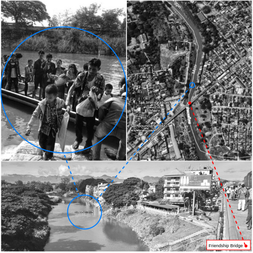

ပေါ်ပေါက်စ ရွှေ့ပြောင်းမှုများ
ပေါ်ပေါက်စ ရွှေ့ပြောင်းမှုများဆိုသည်မှာ မြန်မာနိုင်ငံနှင့်ထိုင်းနိုင်ငံအကြားတွင် ဖြစ်ပေါ်နေသည့်လုပ်အားခနည်း နိုင်ငံတကာ အလုပ်သမား ရွှေ့ပြောင်းလုပ်ဆောင်မှုအား အသွင်တူ ဖန်တီးရန်၊ လေ့လာရန်နှင့် မြင်ယောင်လာစေရန်အတွက် အေးဂျင့်အခြေပြုပုံစံငယ် ပြုလုပ် ( အေဘီအမ်) အသုံးပြုခြင် း အယူအဆ၏သာဓက တစ်ခုဖြစ်ပါသည်။ အသုံးဝင်သော အေဘီအမ်တစ်ခု ဖန်တီးနိုင်ရန်မှာ ပညာရပ်ဆိုင်ရာ ဗဟုသုတအသေးစိတ်များ၊ ကွန်ပျူတာဆိုင်ရာ ကျွမ်းကျင်မှုနှင့် သချင်္ာပညာဆိုင်ရာ ကျွမ်းကျင်မှုများ လိုအပ်ပါသည်။ ဤသို့ ပုံစံငယ်အား ပထမဆုံးအကြိမ် အကြိမ်ကြိမ်လုပ်ဆောင်ခြင်းသည် ပညာရပ်နယ်ပယ်တစ်ခုထက်ပါဝင်သော သုတေသန အဖွဲ့များအတွင်း ပူးပေါင်းလုပ်ဆောင်မှုများအတွက် အေဘီအမ်၏ စွမ်းရည်ကို လေ့လာရန်နှင့် ပြည်သူလူထုအတွက် ဇာတ်ကြောင်းပြန် တုံ့ပြန်မှုရှိသော ပုံများမှတစ်ဆင့် သုတေသနတွေ့ရှိမှုများအား ဖြန့်ဖြူးနိုင်စေရန်ဖြစ်ပါသည်။ အေဘီအမ်များကဲ့သို့သော လူမှုရေးသရုပ်သကန်ဖန်တီးမှုများအား ရူပ်ထွေးသောလူမှုရေးဖြစ်စဉ် နှင့် ဆက်စပ်နေသော သီအိုရီပိုင်းဆိုင်ရာနှင့် လက်တွေ့အမြင်ကို အခြေခံသော ဆွေးနွေးခြင်းများတွင် ပံ့ပိုးကူညီနိုင်ရန်အတွက် “ မှတ်ကျောက်များ” အဖြစ် ပိုမိုအသုံးပြုလာကြပါသည်။ ပေါ်ပေါက်စ ရွေ့ပြောင်းမှုများဆိုသည်မှာ လုပ်ငန်းဆွေးနွေးမှုကျယ်ကျယ်ပြန့်ပြန့် လုပ်ဆောင်ကာ လုပ်အားခနည်းပါးသော လုပ်သား ရွှေ့ပြောင်းမှုနှင့် ဆက်စပ်နေသည့် ကိစ္စရပ်များနှင့်ပတ်သက်၍ လုပ်ကိုင်နေသော ပညာရပ်နယ်ပယ်တစ်ခုမကပါဝင်သော ပညာရှင်ကွန်ရက်များနှင့် အန်ဂျီအိုအဖွဲ့အစည်းများ၊ အစိုးရနှင့် လူထုအတွင်း ပါဝင်သူများအား အသိအမှတ်ပြုနိုင်ရန် အေဘီအမ်တစ်ခုအား ပထမဆုံးအကြိမ် အကြိမ်ကြိမ် ပြုလုပ်နေခြင်းဖြစ်ပါသည်။
ပေါ်ပေါက်စ ရွှေ့ပြောင်းမှုများရဲ့အေဘီအမ် တုံ့ပြန်မှု ပုံစံအား ဤစာမျက်နှာအဆုံးတွင် တွေ့ရှိနိုင်ပါသည်။ ထိုနေရာသို့ တိုက်ရိုက်ရောက်နိုင်ရန် ဤနေရာ. တွင် နှိပ်နိုင်ပါသည်။
နည်းပညာ နောက်ခံ
နမူနာပုံစံငယ ်တခုဆိုသည်မှာ လက်တွေ့ လောက စနစ်တစ်ခု၊ လုပ်ငန်းစဉ်တစ်ခု၊ အရာဝတ္တုတစ်ခု၊ အဖြစ်အပျက်တစ်ခု သို့မဟုတ် ဖြစ်စဉ်တစ်ခုအား အကျဉ်းချုပ် ကိုယ်စားပြုဖော်ပြမှု တစ်ခုပင်ဖြစ်ပါသည်။ ကွန်ပျူတာဆိုင်ရာ နမူနာပုံစံငယ် is တစ်ခုဆိုသည်မှာ အသေးစိတ်အချက်အလက်များ ဖြည့်သွင်းခြင်းကို လုပ်ဆောင်၍ ထိုအသေးစိတ်အချက်အလက်များအား လုပ်ပုံလုပ်နည်းအရ စီမံကာ ဖွဲ့စည်းတည်ဆောက်ထားသည့်ရလာဒ်များအား ထုတ်လုပ်ပေးမှုတစ်ခုဖြစ်သည်။ ပုံစံငယ်ပြုလုပ်ခြင်း, အလေ့အထသည် လက်တွေ့လောကတွင် တည်ရှိနေသည့် ဖြစ်စဉ်တစ်ခုအား သဘာဝကျခြင်းအပေါ် တိုက်ရိုက်လေ့လာခြင်းထက် ပို၍ ကိုင်တွယ်ဖြေရှင်းရလွယ်ကာ အကျိုးများသော နည်းတစ်ခုနှင့် ဆန်းစစ်ကာ နားလည်အောင် ပြုလုပ်ခြင်းတွင် အထောက်အကူပြုနိုင်သည်။
ဖြစ်စဉ်အများစုအား ပုံမှန်အားဖြင့် ပတ်ဝန်းကျင်တစ်ခုအဖြစ်၊ အေးဂျင့်တစ်စုအဖြစ် ၊ သို့မဟုတ် အေးဂျင့်အချင်းချင်းဖြစ်စေ၊အေးဂျင့်နှင့် ပတ်ဝန်းကျင်ဖြစ်စေ အပြန်အလှန်အကျိုးပြုမှုများရဲ့ဖော်ပြချက် နမူနာပုံစံလုပ်ဆောင်ခြင်းအဖြစ် လုပ်ဆောင်နိုင်သည်။ ပျံ့နှံ့နေသည့် တုံ ့ပြန်မှု အစိတ်အပိုင်းများစွာ ပါဝင်ပေါင်းစပ်ထားသည့် စနစ်များသည် ရူပ်ထွေးသောစနစ်များ အဖြစ် ထ အဖြစ် ထင်ရှားသည်။ ရူပ်ထွေးသောစနစ်တစ်ခုအတွင်း ပျံ့နှံ့နေသော လိုအပ်ချက်အမြောက်အများ အပြန်အလှန်အကျိူးပြုမှုများမှ ထွက်ပေါ်လာသော ဆန်းသစ်၍ လွယ်ကူရှင်းလင်းသော တည်ဆောက်ပုံများ၊ ဂုဏ်သတ္တိများနှင့် ပုံစံများသည် ပေါ်ပေါက်စ အပြုအမူ ဟူ၍ ထင်ရှားသည်။ အေးဂျင့်အခြေပြု ပုံစံငယ်ပြုလုပ်ခြင်းအတတ ် ( အေဘီအမ်) သည် အချိန်နှင့်အမျှ ဖြစ်ပေါ်လာသည့် ပေါ်ပေါက်စအပြုအမူအား ထုတ်ဖော်ပြသနေသည့် ရူပ်ထွေးသော စနစ်တစ်ချို့အား ကိုယ်စားပြုခြင်း၊ စူးစမ်းလေ့လာခြင်းနှင့် ရှင်းပြခြင်းတို့လုပ်ဆောင်ရာတွင် အသုံးပြုသော ကွန်ပျူတာဆိုင်ရာ ပုံစံငယ်ပြုလုပ်ခြင်း အတတ်ပညာတစ်ခုဖြစ်ပါသည်။ ရူပ်ထွေးသောစနစ်တစ်ခုအတွင်းရှိ အခြေခံ( ပတ်ဝန်းကျင်၊ အေးဂျင့်များ၊ အပြုအမူများ) တစ်ခုချင်းစီသည် အေဘီအမ်၏ အခြေခံအုတ်မြစ်ကို တည်ဆောက်သည့် ကွန်ပျူတာဆိုင်ရာ စည်းမျဉ်းများအဖြစ်သို့ ပြောင်းလဲအကောင်အထည်ဖော်နိုင်သည်။
အေးဂျင့်အခြေပြုပုံစံငယ်များ၏ ယေဘုယျထူးခြားသော လက္ခဏာများတွင်
- အတိအလင်း ထွက်ဆိုထားခြင်းမဟုတ်ပဲ ရိုးရှင်းသော အောက်ခံ စည်းမျဉ်းများမှ ထွက်ပေါ်လာပြီး “ ၎င်းတို့ဘာသာ စုစည်းထားသော” အမူအကျင့်များ၏ ဂုဏ်သတ္တိများ၊ ဖွဲ့စည်းတည်ဆောက်မှုများနှင့် ရူပ်ထွေးသော နမူနာများ
- အေးဂျင့်တစ်ဦးတစ်ယောက်၏ အမူအကျင့်အတွင်းရှိ အလျဉ်းသင့်သလိုဖြစ်ပေါ်နေမှုသည် အပြောင်းအလဲမရှိသော အလျဉ်းသင့်သလိုဖြစ်ပေါ်မနေသည့် လူထုအမူအကျင့်အတွင်း တည်ရှိနေခြင်းတို့ပါဝင်သည်။
အေးဂျင့်အခြေပြု ပုံစံငယ်ပြုလုပ်ခြင်းနည်းပညာသည် အောက်ပါအခြေအနေမျိုးများတွင် အသုံးဝင်သည်။
- တစ်စုံတစ်ယောက်က ရူပ်ထွေးသောစနစ်တစ်ခုအား ယာယီအားဖြင့် ပြောင်းလဲစေနိုင်မှု ( အချိန်အပေါ်မူတည်နေမှု) ကိုလိုအပ်သည့်အခါတွင်
- ရူပ်ထွေးသော စနစ်တစ်ခုသည် အေးဂျင့်ဦးရေ ဆယ်သန်းထက်များပါကနှင့် ဆယ်သန်းထက်နည်းပါက၊
- ရူပ်ထွေးသော စနစ်တစ်ခုတွင် သောင်းပြောင်းထွေလာ ရောနှောနေသော အချိန်နှင့်နေရာ အပြုအမူကို ဖော်ပြသည့် အေးဂျင့်များပါဝင်နေပြီး ပြီးခဲ့သောအဖြစ်အပျက်များအား အခြေခံ၍ အပြုအမူနှင့် နည်းဗျူဟာများ 1 ပြောင်းလဲနိုင်ပါက
အကြောင်းအရာ နောက်ခံ
ထိုင်းနိုင်ငံနှင့် မြန်မာနိူင်ငံအကြားရှိ လုပ်အားခနည်း ရွှေ့ပြောင်းမှုသည် အချိန်နှင့်အမျှ ပေါ်ပေါက်စ အပြုအမူကို ထုတ်ဖော်ပြနေသည့် ရူပ်ထွေးသည့်စနစ်တစ်ခု ဖြစ်ပါသည်။ ဤ စနစ်တွင် ရွှေ့ပြောင်းအလုပ်သမား သန်းပေါင်းများစွာ၊ ကြားခံများ ( ခရီးသွားလာခြင်း သို့မဟုတ် အလုပ်နေရာရှာပေးခြင်း စသည့် ရွှေ့ပြောင်းခြင်း သို့မဟုတ် အလုပ်ခန့်ထားခြင်း လုပ်ငန်းစဉ်များတွင် ကူညီဆောင်ရွက်ပေးသော သူများ) ၊ နှင့် အလုပ်ရှင်များပါဝင်ကြသည်။ အေးဂျင့်များသည် လူမှုရေးအကြောင်းအရာများ၊ ရွှေ့ပြောင်းမှု မူဝါဒ၊ မြေယာခွဲခြမ်းခြင်း ဥပဒေများ၊ ပံ့ပိုးခြင်း ကွင်းဆက်များ၊ ငွေကြေးစနစ်များ၊ ရာသီဥတုပုံစံများနှင့် ကိုဗစ် ၁၉ ကဲ့သို့သော လူထုကျန်းမာရေး အရေးပေါ်အခြေအနေများရှိ အပြောင်းအလဲများအား တာဝန်ယူပြောင်းလဲနေသည့် သောင်းပြောင်းထွေလာ ရောနှောနေသော အချိန်နှင့်နေရာ အပြုအမူကို ဖော်ပြသည်။ ( ရိုက်တာသတင်း ၂၀၂၀။ ).
လုပ်သားရွှေ့ပြောင်းမှုနှင့်ပတ်သက်၍ သုတေသနပြုလုပ်မှု အတော်အသင့်ရှိပါသည်၊ သို့သော် အစဉ်အလာ အချက်အလက် ခွဲခြမ်းစိတ်ဖြာခြင်း ပုံစံတော်တော်များများ ( ကိန်းဂဏန်းဆိုင်ရာ ပြောင်းလဲနိုင်သော အရာများကြားရှိ ဆက်ဆံရေးကို ခန့်မှန်း ခွဲခြမ်းခြင်းများ၊ အကြောင်းအရာပေါ် အခြေခံ၍ ခွဲခြမ်းစိတ်ဖြာခြင်းများ စသည်တို့)နှင့် အချက်အလက်ပုံစံများ ( ဇာတ်ကြောင်းပြန် စာသားများ၊ ငြိမ်နေသော သို့မဟုတ် ရွေ့နေသော ရုပ်ပုံများ စသည်တို့) သည် ၎င်းတို့ဘာသာ အလုပ်သမား ရွှေ့ပြောင်းခြင်းစနစ်များအတွင်းရှိ ယာယီ လုပ်ထုံးလုပ်နည်းများအား တိကျစွာ သို့မဟုတ် ပြည့်စုံစွာ ဖော်ပြပေးနိုင်ခြင်းမရှိပါ။ ပိုမိုကျယ်ပြန့်သော အဆင့်စုံ ပုံစံငယ်ပြုလုပ်ခြင်း နယ်ပယ်ထဲမှ ပညာရှင်များ ထုတ်ဖော်ပြောဆိုသကဲ့သို့ “ အရေးပါသော လူ့အဖွဲ့အစည်းဆိုင်ရာ အကြောင်းအရာ၏ ဘာသာရပ်တော်တော်များများရှိ တိုးတက်မှုသည် သီးသန့် စနစ်များ ၏ ပမာဏမျိုးစုံပါဝင်သည့် ပုံစံငယ်များကို လေ့လာစူးစမ်းခြင်းအောက်တွင် ကျွန်ုပ်တို့ ၏ ဒီဇိုင်းရေးဆွဲခြင်းနှင့် ဖြေရှင်းခြင်း လုပ်နိုင်စွမ်းက ဆုံးဖြတ်ပေးသည်…… စနစ်သိပ္ပံဆိုသည်မှာ စိတ်ဝင်စားရာ နယ်ပယ် ( ရူမြင်သုံးသပ်မှု ဗေဒအား နားလည်ခြင်းသည် အဆင့်အမျိုးမျိုးမှ အပြန်အလှန်တုံ့ပြန်မှုများအတွက် တာဝန်ယူခြင်းအား ကျွန်ပ်တို့ နားလည်နိုင်စွမ်းကို အရေးပါစွာ ဖြစ်ထွန်းစေသည် ( ဟိုအက်စ်စထရယ်၊ ၂၀၁၃ ) ထဲရှိ ပမာဏမျိုးစုံပါဝင်သည့် ဖြစ်စဉ်အား လေ့လာခြင်းမှ တစ်ပါး အခြားမဟုတ်ပါ။
ညွန်ကြားချက်ဖြင့် ကြားဝင်စွက်ဖက်ခြင်းနှင့် မူဝါဒ တုံ ့ပြန်မှုတို့သည် ပုံမှန်အားဖြင့် ရူပ်ထွေးသော စနစ်များအပေါ်တွင် လွမ်းမိုးမှု ဖြစ်စေရန်အတွက် ၎င်းတို့ ပြောင်းလဲမှု ဖြစ်စေဖို့ ကြားဝင်စွက်ဖက်နေသော စနစ်များအား ယာယီ ပြောင်းလဲနိုင်စွမ်း နားလည်မှု တစ်ခုဖြင့် သရုပ်ဖော်ရန်လိုအပ်ပါသည်။ ဤကိစ္စရပ်တွင် ရွှေ့ပြောင်းအလုပ်သမားများ ၏ ကျန်းမာရေး ရလာဒ်များကို အပြုသဘောဆောင် ပြောင်းလဲပစ်ရန်နှင့် စနစ်တကျ ထိခိုက်နစ်နာစေခြင်းများအား လျော့ချနိုင်စေရန်အတွက် ၊ ကျွနု်ပ်တို့သည် အလုပ်ကောင်းမွန်စွာလုပ်ရခြင်းနှင့် ဆန့်ကျင်ဘက် ခေါင်းပုံဖြတ်ခိုင်းစေခြင်းတို့အဖြစ် စာရင်းဝင်သော လုပ်ထုံးလုပ်နည်းများနှင့် လုပ်ငန်းစဉ်များကို ပထမဦးစွာ နားလည်ရန် လိုအပ်ပါသည်။
ရူပ်ထွေးသော လူမှုရေးပြသာနာများကို အဖြေရှာရန်အတွက် ထိရောက်သော ဖြေရှင်းနည်းမရှိပါ၊ သို့သော် အေးဂျင့်အခြေပြု ပုံစံငယ်ပြုလုပ်ခြင်းအတတ်နှင့်အတူ အခြားသော ကွန်ပျူတာဆိုင်ရာ သုတေသန နည်းလမ်းများသည် သိထားသော သုတေသန လစ်ဟာချက်များထဲမှ တစ်ချို့ကို ဖြည့်ရန် ကြိုးပမ်းရာတွင် အသုံးပြုနိုင်သည်။ လူမှုရေးသိပ္ပံ သုတေသနပညာရှင်များက ပြည်သူ့ကျန်းမာရေး ကဲ့သို့သော ဘာသာရပ်အမြောက်အများအနှံ့ ပြုလုပ်သော အသုံးချ သုတေသနအတွက် ကွန်ပျူတာဆိုင်ရာ ပုံစံငယ်ပြုလုပ်ခြင်း နည်းပညာများကို ပိုမိုရှာဖွေလာကြသည် ( အယ်လ်- ဆာရတ် ၂၀၁၂ ). ။ ၂၀၁၉ ခုနှစ်တွင် ကျွန်ုပ်သည် ထိုင်း မြန်မာ နယ်စပ်တွင် လုပ်သားရွှေ့ပြောင်းခြင်း အချက်အလက်များအား ကိုယ်ပိုင်လုပ် တုံ့ပြန်မှုရှိသော အချက်အလက် စုဆောင်းရေး ကရိယာများဖြင့် စုဆောင်းခဲ့သော ပညာရပ် တစ်ခုမထက်က ပါဝင်သော သုတေသနအဖွဲ့တွင် အဖွဲ့ဝင်အဖြစ် ပါဝင်ခဲ့ပါသည် ( ရုပ်ပုံ - ၁ ). ။ ဤအချက်အလက်အား အနာဂတ် အေးဂျင့်အခြေပြု ပုံစံငယ်ပြုလုပ်ခြင်းနည်းပညာတွင် အသုံးပြုမည်ဖြစ်ပါသည်။ သို့သော်လည်း ၊ အချက်အလက်စုဆောင်းခြင်းနည်းစနစ်နှင့် အချက်လက်အမျိုးအစား မည်သို့ပင်ရှိစေ၊ ၎င်းရူပ်ထွေးသော ပြသာနာများအပေါ်ရှိ သုတေသနအချက်အလက်များမှာ အမြဲပင် တိကျမှုမရှိ၊ ခေတ်မီမှုမရှိ၊ အလှမ်းဝေးကာ သို့မဟုတ် ကိုယ်စားပြုနိုင်ခြင်းမရှိပါ။ နည်းလမ်းသစ်များသည် ပို၍ ရူပ်ထွေးသောစနစ်များအတွင်းရှိ ကြိုတင်မခန့်မှန်းနိုင်သော ယန္တရားများကို ဖော်ထုတ်ပေးနိုင်သည်။ ရှောင်ဖယ်ထားခြင်းခံရသော သို့မဟုတ် အလှမ်းဝေးသော လူထုများဆီမှ အချက်အလက်များကို စုဆောင်းရာတွင် ကျယ်ပြန့်သော လူ့ကျင်ဝတ်ဆိုင်ရာနှင့် ထောက်ပံ့ပို့ ဆောင်ရေး ဆိုင်ရာ အကန့်အသတ်များလည်းရှိနေနိုင်ပါသည်။

ရုပ်ပုံ တစ်- ကိုယ်တိုင်ပြုလုပ်ထားသော အပြန်အလှန်တုံ့ပြန်နေသည့် ကွန်ရက် မြေပုံဆွဲခြင်းကရိယာအား ရိုက်ယူထားသော ဓာတ်ပုံများ
ပထမဆုံး အေဘီအမ်တစ်ခုအား တည်ဆောက်ခြင်း
ဤအယူအဆ သာဓက၏ ရည်ရွယ်ချက်အဖြစ်၊ တစ်စုံတစ်ယောက်သည် စူးစမ်းလေ့လာရေး အေဘီအမ်နှင့် ဖြစ်စဉ်အခြေခံ အေဘီအမ် နှစ်မျိုးအား အေဘီအမ် 2 ၏ အဓိက အမျိုးအစားနှစ်မျိုးအဖြစ် တွေးဆနိုင်ပါသည်။ ထိုအမျိုးအစားများသည် အေဘီအမ်မှ ဖြေဆိုရန် တစ်စုံတစ်ယောက် အလိုရှိသော သုတေသန မေးခွန်းဆီ တိကျသော နယ်ပယ်အနှ့ံ တည်ရှိနေကြပါသည်။ စူးစမ်းလေ့လာရေး အေဘီအမ်သည် နယ်ပယ် တစ်ဝက်၏ တိကျမှုနည်းပါးသော နေရာတွင်တည်ရှိသည်။ ဖြစ်စဉ်အခြေခံ အေဘီအမ်သည် နယ်ပယ် တစ်ဝက်၏ ပို၍ တိကျသော နေရာတွင် တည်ရှိသည်။ ရည်ရွယ်ချက်မှာ တစ်စုံတစ်ယောက်သည် ပုံစံငယ် ဒီဇိုင်း မှ တစ်ဆင့် စူးစမ်းလေ့လာကာ ထပ်ခါထပ်ခါ ပြုလုပ်သည်နှင့် ပိုမို၍ တိကျသော သုတေသန မေးခွန်း ကိုရရှိစေရန် ဖြစ်ပါသည်။
စူးစမ်းလေ့လာရေး အေဘီအမ်ဖြင့် တစ်စုံတစ်ယောက်သည် အကြမ်းဖျင်း ပုံစံငယ် တည်ဆောက်ရန်အတွက် ယေဘုယျ လေ့လာချက်များ သို့မဟုတ် သီအိုရီအား အသုံးပြုနိုင်ပါသည်၊ အကြမ်းဖျင်းပုံစံငယ်အား လေ့လာချက်များနှင့် နှိုင်းယှဉ်နိုင်ပါသည်၊ စူးစမ်းလေ့လာရေး ပုံစံငယ်တစ်ခုနှင့် တဖြည်းဖြည်း တွေ့ဆုံအောင် လုပ်ဆောင်နိုင်ပါသည်။ ဖြစ်စဉ်အခြေပြု အေဘီအမ်ဖြင့် တစ်စုံတစ်ယောက်သည် စံနမူနာအား အသွင်တူအောင် ဖန်တီးရန် ရည်ညွှန်းချက်စံနမူနာအား အသုံးပြုနိုင်ပါသည်၊ အခြားသော စံနမူနာများ( အချက်အလက်များနှင့် လွဲနေသော အဆိုကြမ်း) ကို စူးစမ်းလေ့လာရန် သတ်မှတ်ချက်ဘောင်များကို ပြောင်းလဲစေနိုင်ပါသည်၊ ထို့အပြင် သင့်တော်သော စူးစမ်းလေ့လာရေး လုပ်ထုံးလုပ်နည်းတစ်ခုသို့ ချဉ်းကပ်နိုင်ပါသည်။ ဤအေဘီအမ်သည် စူးစမ်းလေ့လာရေးအား အခြေခံထားကာ ယေဘုယျ လေ့လာချက်များမှ တည်ဆောက်ထားခြင်းဖြစ်၍ ထိုင်း မြန်မာ နယ်စပ်တွင် အချက်အလက်စုဆောင်းသည့် နေရာမှ ကိုယ်တိုင်သင်ကြားတတ်မြောက်မှုများကို ဖြစ်ပေါ်လာခြင်းဖြစ်ပါသည်။ ဤအေဘီအမ်၏ အနာဂတ် ထပ်ခါထပ်ခါပြုလုပ်ခြင်းများသည် ဖြစ်စဉ်အခြေခံမည် ဖြစ်ကာ ၂၀၂၀ ခုနှစ်တွင် ထုတ်ဝေမည့် သုတေသနအချက်အလက်များမှာ လက်တွေ့အမြင်ကိုအခြေခံစွာဖြင့် သရုပ်ဖော်ပေးမည်ဖြစ်သည်။
အေဘီအမ်များအား ပုံစံရေးဆွဲခြင်း နည်းများစွာရှိပါသည် ထို့အပြင် တည်ဆောက်ရေး ရွေးချယ်မှုသည် အောက်ပါတို့အပေါ် မူတည်ပါသည်
- ဖြစ်စဉ်၏အမျိုးအစား
- ပါဝင်သည့် ပညာရပ်နယ်ပယ်တွင် ဗဟုသုတရှိမှု အဆင့်
- ကွန်ပျူတာဆိုင်ရာ ကရိယာများဖြင့် သက်တောင့်သက်သာရှိမှု
- အဖွဲ့၏ ဖွဲ့စည်းပုံ
- အရင်းအမြစ်များနှင့် အချိန်ဇယား
- တစ်ဦးချင်း စိတ်ဝင်စားမှု
အေဘီအမ်များအား အကောင်အထည်ဖော်ရန်အတွက် အောက်ခြေမှအပေါ်သို့ ချဉ်းကပ်မှုနှင့် အပေါ်မှ အောက်ခြေသို့ ချဉ်းကပ်မှု ဆို၍ ယေဘုယျ ချဉ်းကပ်မှု နှစ်မျိုးရှိပါသည်။ အောက်ခြေမှ အပေါ်သို့ ချဉ်းကပ်ခြင်းနည်းသည် နည်းလမ်းကျသော သုတေသန မေးခွန်းတစ်ခုကို အကြမ်းဖျဉ်းဖော်ပြခြင်းမရှိပဲ ဖြစ်စဉ်တစ်ခုအား ရွေးခြင်းဖြင့် စတင်ကာ လုပ်ငန်းစဉ်တစ်လျောက်တွင် နည်းလမ်းကျသော သုတေသနမေးခွန်းတစ်ခုအား အကြိမ်ကြိမ် ဖြစ်ပေါ်အောင် ပြုလုပ်ခြင်းဖြစ်ပါသည်။ အပေါ်မှ အောက်သို့ ချဉ်းကပ်ခြင်းနည်းပညာသည် အယူအဆအပေါ် မူတည်သည့် ပုံစံငယ်တစ်ခုအား ဖန်တီးကာ နောက်မှ ကွန်ပျူတာဆိုင်ရာ ပုံစံငယ်တစ်ခုအား တည်ဆောက်ခြင်းဖြစ်ပါသည်။ အပေါ်မှ အောက်သို့ ချဉ်းကပ်နည်းသည် ပညာရပ်နယ်ပယ်ဗဟုသုတ မြင့်မားသော သိပ္ပံပညာရှင်များက အထူးအကျိုးတူအုပ်စုများနှင့် အယူအဆအပေါ် မူတည်သည့် ပုံစံငယ်အား ဖန်တီးကာ ၎င်းကို ကွန်ပျူတာပရိုဂရမ်ရေးသားသူများက ကွန်ပျူတာဆိုင်ရာ ပုံစံငယ်အဖြစ်သို့ အကောင်အထည်ဖော်သည့် သုတေသနအဖွဲ့များ အသုံးပြုနေကျ ချဉ်းကပ်နည်းတစ်မျိုးဖြစ်ပါသည်။
ဤ အေဘီအမ်၏ ပထမဆုံးအကြိမ်ကြိမ်ပြုလုပ်ခြင်းအား အောက်ခြေမှ အပေါ်သို့ ချဉ်းကပ်ခြင်းနည်း ကို သုံးသည် ၊ ဤအကြိမ်သည် ကျွနု်ပ်၏ ပထမဆုံး အေဘီအမ် ဖြစ်ကာ ကျွန်ုပ်သည် အဖွဲ့၏ အချိန်ပိုင်းအဖွဲ့ဝင်တစ်ယောက်အဖြစ် ပါဝင်နေပါသည်။ ကျွန်ုပ်သည် ကွန်ပျူတာဆိုင်ရာကရိယာများဖြင့် အလွန်ပင် သက်တောင့်သက်သာရှိပါသည်၊ သို့သော် ကျွနု်ပ်မှာ နက်ရိူင်းသော ပညာရပ်ဆိုင်ရာ ဗဟုသုတအသေးစိတ်မရှိပါ။ ဤအချက်ကိုသိထားခြင်းကြောင့် ကျွန်တော်သည် နက်ရိူင်းသော ပညာရပ်ဆိုင်ရာ ဗဟုသုတအသေးစိတ်ရှိသော သူများနှင့် တွေ့ဆုံခြင်းဖြင့် သုတေသနမေးခွန်းအား အကြိမ်ကြိမ်ဖြစ်တိုးတက်လာအောင် ပြုလုပ်ခဲ့ပါသည်။ ဤလုပ်ငန်းအား Alys McAlpine (လန်ဒန် တကိုယ်ရေသန့်ရှင်းရေးနှင့် အပူပိုင်းဒေသ ဆေးဝါးများ ကောလိပ်) ၊ ဒေါက်တာ Dr. Ligia Kiss (ကမ္ဘာ့ကျန်းမာရေးသိပ္ပံ) ၊ Dr. Zaid Chalabi (UCL, The Bartlett) နှင့် ပါမောက္ခ Professor Cathy Zimmerman (လန်ဒန် တကိုယ်ရေသန့်ရှင်းရေးနှင့် အပူပိုင်းဒေသ ဆေးဝါးများ ကောလိပ်) တို့က လေးနက်၍ ထိုးထွင်းအမြင်ရှိသော ပံ့ပိုးပေးမှုဖြင့် ပံ့ပိုးပေးကြပါသည်။ ဤလုပ်ငန်း၏ မကြာသေးမီက တိုးတက်ဖွံ့ဖြိုးမှုကိုလည်း Tin Geber and the Digital Futures Fellowship team at Hivos သုတေသန ထောက်ပံ့ကြေးအဖွဲ့ကနေ ထောက်ပံ့ထားပါသည်။ ၎င်းပညာရှင်များဖြင့် ပူးပေါင်းကာ ကျွနု်ပ်သည် မူလကတည်းကရှိနေသော သီအိုရီပိုင်းဆိုင်ရာ အယူအဆအပေါ် အခြေတည် ကန့်သတ်ချက်များနှင့် လက်တွေ့အမြင်ကိုအခြေခံထားသော ခွဲခြမ်းစိတ်ဖြာမှုတို့ဖြင့် သရုပ်ဖော်ထားသော အေဘီအမ်များအား တည်ဆောက်ခြင်း လုပ်ငန်းစဉ်အား လုပ်ဆောင်နေပါသည်။ ဤသို့ပြုရခြင်းမှာ နောက်ဆုံးတွင် အောက်ခြေမှ အပေါ်သို့ ချဉ်းကပ်သည့်နည်းနှင့် အပေါ်မှ အောက်ခြေသို့ ချဉ်းကပ်သည့် နည်းများကို ရောနှောထားသော နည်းတစ်မျိုးကိုရရှိရန်ဖြစ်ပါသည်။

ရုပ်ပုံ ၂ အေဘီအမ် လုပ်ငန်းလည်ပတ်မှုများ ( ပမာဏအပြည့်အစုံ မြင်ကွင်း )
အောက်ခြေမှအပေါ်သို့ အခြေခံ သဘောတရားများ
- ရိုးရှင်းစွာ စတင်ပါ
- ဖြစ်နိုင်ချေရှိသော စိတ်ဝင်စားစရာမေးခွန်းများအတွက် အသင့်ပြင်ထားပါ
- ပညာရပ်အကြောင်းအရာနှင့် ပတ်သက်နေသည့် ရိုးရှင်းသော ပုံစံငယ်တစ်ခုနှင့် စတင်ပါ သို့မဟုတ် ဖြစ်စဉ်ကို ထောက်လှမ်းစုံစမ်းသည့်နေရာတွင် အသုံးဝင်မည့် ရိုးရှင်းသော အစိတ်အပိုင်းများဖြင့် စတင်ပါ။
- အလားအလာရှိသော ဦးတည်ရာများအတွက် တစ်စုံတစ်ယောက်တည်ဆောက်ထားသည်ကို ပြန်လည်သုံးသပ်ပါ။
- အယူအဆအပေါ်အခြေခံမှုသည် ပုံစံငယ်နှင့် ကွန်ပျူတာဆိုင်ရာ ပုံစံငယ်တို့မှာ ပူးတွဲ၍ ပြောင်းလဲဖြစ်ပေါ်သင့်သည်။ တစ်ခုတွင်ဖြစ်ပေါ်သော အပြောင်းအလဲများမှာ အခြားတစ်ခုတွင်လည်း ဖြစ်ပေါ်သင့်သည်။
အပေါ်မှ အောက်ခြေသို့ အခြေခံ သဘောတရားများ
- ရိုးရှင်းစွာ စတင်ပါ
- ကြိုတင်အဓိပ္ပာယ်ဖွင့်ဆိုထားသော သုတေသနမေးခွန်းဆီသို့ ဦးတည် တည်ဆောက်ခြင်း
- ဖြစ်စဉ်အား စူးစမ်းလေ့လာနိုင်သည့် အရိုးရှင်းဆုံး အေးဂျင့်တစ်စုနှင့် အမူအကျင့် စည်းမျဉ်းများအား တည်ဆောက်ခြင်း
- ကြိုတင်အဓိပ္ပာယ်ဖွင့်ဆိုထားသော သုတေသနမေးခွန်းအား အမြဲစဉ်းစားပါ “ X မပါပဲ တိုးတက်မှု လုပ်ဆောင်နိုင်ပါ့မလား “
- ပုံစံငယ်အား လိုအပ်ချက်များ တဖြည်းဖြည်းချင်း ပေါင်းထည့်ပါ
ရွေးချယ်ထားသောချဉ်းကပ်နည်း မည်သို့ပင်ဖြစ်စေ ၊ ကွန်ပျူတာဆိုင်ရာ ပုံစံငယ်သည် ၎င်း ပစ်မှတ်ထားသည့် အယူအဆအပေါ် အခြေခံထားသည့် ပုံစံအား တိကျစွာ အကောင်အထည်ဖော်အောင် လုပ်ဆောင်ရန် အရေးကြီးပါသည်။ ဖွ့ံဖြိုးရေးလုပ်ငန်းစဉ်၏ အဆင့်တိုင်းတွင် ပုံစံငယ်သည် သုတေသနမေးခွန်းအတွက် အဖြေတစ်ချို့အား ဖြေပေးနိုင်စွမ်းရှိရမည်ဖြစ်ပါသည်။
ပေါ်ပေါက်စ ရွှေ့ပြောင်းမှုများ အေဘီအမ်
သုတေသနမေးခွန်း နယ်စပ်ဒေသများတွင် တစ်ဦးချင်း ကြားခံဆောင်ရွက်ပေးသူပါဝင်သည့် ရွှေ့ပြောင်းခြင်း လမ်းများနှင့် ကြီးမားသော အလုပ်သမား ရွှေ့ပြောင်းသည့် လမ်းကြောင်းများ မည်သို့ ပေါ်ထွက်လာကြသနည်း ။
ကျွနု်ပ်သည် ဤအေဘီအမ်၏ အေးဂျင့်အမျိုးအစားများကို အထက်တွင် ဆိုခဲ့ပြီးဖြစ်သော သုတေသနမေးခွန်းနှင့် အများဆုံး ဆက်နွယ်နေသော အကန့်အသတ်မရှိသည့် မျက််မြင်ထင်ရှားဖြစ်နေသော အရာများအပေါ် မူတည်၍ ရွေးချယ်ခဲ့ပါသည်။ ဤအေးဂျင့်အမျိုးအစားများမှာ အေဘီအမ်အတွင်းတွင် ရုပ်ပိုင်းဆိုင်ရာပမာဏနှင့် အချိန်ပမာဏအရ အနည်းနှင့်အများဆိုသလို အသေးစိတ်တိကျမှုရှိပါသည်။ ပေါ်ပေါက်စ ရွှေ့ပြောင်းမှုများ အေးဂျင့်အမျိုးအစားများမှာ
- ရွှေ့ပြောင်းလုပ်သား
- ကြားခံလူများ
- အလုပ်ရှင်များ
စကားချပ်အနေနှင့် ၊ တစ်ချို့သော အေဘီအမ်များတွင် တစ်ဦးချင်း ဂုဏ်သတ္တိများ၊ အနေအထားများ၊ အမူအကျင့်များ မရှိပဲ “ ကမ္ဘာအနှ့ံက”ရှေ့ပြေးအေးဂျင့်ပုံစံတစ်ခုမှ ယေဘုယျ ဂုဏ်သတ္တိများ၊ အခြေအနေများနှင့် အမူအကျင့်များကို ဆက်ခံရရှိခဲ့သော တစ်ထပ်တည်းဖြစ်သော “ မူလအေးဂျင့်များ” ပါဝင်နိုင်သည်။ မူလအေးဂျင့်အားလုံးမှာ ၎င်းတို့ ရှေ့ပြေးအေးဂျင့်ပုံစံ၏ကိုယ်ပွားများပင်ဖြစ်ပါသည်။ထိုသို့ ရှင်းလင်းလွယ်ကူအောင်လုပ်ထားသော မူလ အေးဂျင့်များမှာ အသုံးဝင်နိုင်ပါသည်၊ သို့သော် ဤပုံစံငယ်ထဲတွင် ၎င်းတို့ မပါဝင်ကြပါ။ ဤပုံစံငယ်ထဲတွင် သောင်းပြောင်းထွေလာရောနှောနေသော အေးဂျင့်အမျိုးအစားသုံးမျိုး ထဲမှ လူဦးရေ သုံးမျိုးသာ ပါဝင်ပါသည်။ ဇယားနံပါတ်တစ်မှာ အေးဂျင့်အမျိုးအစားများ၊ ၎င်းတို့ ၏ ဂုဏ်သတ္တိများနှင့် ၎င်းတို့ ၏အမူအကျင့်များကိုပြသသည်။ အေးဂျင့်အမျိုးအစားဂုဏ်သတ္တိများသည် ၎င်းတို့အေးဂျင့်အမျိုးအစား ထဲတွင် အေးဂျင့်တစ်ယောက်အား တခြားသော အေးဂျင့်များအားလုံးနှင့် ကွဲပြားခြားနားစေသည်။ အေးဂျင့်အမျိုးအစား အမူအကျင့်များသည် အေဘီအမ်အတွင်းရှိ အေးဂျင့်အမျိုးအစားတစ်ခုအား အခြားသော အေးဂျင့်အမျိုးအစားများအားလုံးနှင့် ကွဲပြားခြားနားစေသည်။
ဇယားနံပါတ် တစ်- ဂုဏ်သတ္တိများ၊ အမူအကျင့်များဖြင့် အေးဂျင့်အမျိုးအစားများ


ရုပ်ပုံ ၃ - အေးဂျင့်လမ်းကြောင်း အယ်လ်ဂိုရီသမ် ( အရွယ်အစားအပြည့်အစုံ မြင်ကွင်း )
ပတ်ဝန်းကျင်
ပတ်ဝန်းကျင်အရည်အသွေးများ ကလည်း အေးဂျင့်အမူအကျင့်အပေါ် သက်ရောက်နေပါသည်။ ရွေးချယ်ထားသော တန်ဖိုးများသည် အေးဂျင့်အမျိုးအစားများအကြား အသေးစိတ် အကွာအဝေးများတွင် အချိုးကျစွာရှိနေသင့်သည်။ ကမ္ဘာလုံးဆိုင်ရာ ကိန်းရှင်များသည် ပတ်ဝန်းကျင်ရဲ့ အစိတ်အပိုင်းများအဖြစ် အမြဲ အုပ်စုလိုက်ခွဲခြားထားသင့်ပါသည်။ ကမ္ဘာလုံးဆိုင်ရာ ကိန်းရှင်များအား အေဘီအမ်ရဲ့ ကြားခံ ဆက်သွယ်သောသည့် စနစ်မှ တစ်ဆင့် ယေဘုယျအားဖြင့် ဆုံးဖြတ်လေ့ရှိပါသည်။
ပတ်ဝန်းကျင်ဆိုင်ရာ အရည်အသွေးများတွင် -
- ဧရိယာ အနံ
- ဧရိယာ အမြင့်
- ဧရိယာ အခွဲများ
- မူရင်းနိုင်ငံ ဧရိယာ
- ခရီးလမ်းဆုံးပန်းတိုင် ဧရိယာ
- နယ်စပ်
- ရွှေ့ပြောင်းလုပ်သား ဦးရေ စုစုပေါင်း
- ကြားခံသူ ဦးရေ စုစုပေါင်း
- အလုပ်ရှင်ဦးရေ စုစုပေါင်း
- အချိန်ရေပြင်ညီ
ပတ်ဝန်းကျင်ဆိုသည်မှာ မြန်မာနိုင်ငံ ( မူရင်း) နှင့် ထိုင်းနိုင်ငံ ( ခရီးလမ်းဆုံးပန်းတိုင်) အကြားရှိ စစ်မှန်သော ရုပ်ပိုင်းဆိုင်ရာကွက်လပ်၏ ယေဘုယျ အကွာအဝေး ကိုယ်စားပြုမှုတစ်ခုဖြစ်ပါသည်။ နယ်နိမိတ်ချင်းထိစပ်နေသော နိုင်ငံနှစ်နိုင်ငံ၏ အလွန်အသေးစိတ်သော အရှိအတိုင်း ပထဝီဝင် ကိုယ်စားပြုမှုကို စွန့်လွှတ်ကာ ၎င်းအစား ရိုးရှင်းစွာဖြင့် မြန်မာနိုင်ငံအား ဘယ်ဘက်တွင် ထောင့်မှန်အဖြစ်လည်းကောင်း ၊ ထိုင်းနိုင်ငံအား ညာဘက်တွင် ထောင့်မှန်တစ်ခုအဖြစ်လည်းကောင်း ၊ နိုင်ငံနှစ်နိုင်ငံအကြားတွင် တစ်ခုတည်းသော အလျားလိုက် နယ်စပ်ထားခြင်းကလည်းကောင်း ပို၍ ရှင်းလင်းကာ ထိရောက်နိုင်ပါသည်။ ထိုင်း-မြန်မာနယ်စပ်သည် စိမ်ဝင့်လျက်ရှိကာ ကြီးမားသော နယ်မြေများတစ်လျောက်တွင် ရေပြင်များက တည်ရှိနေကြပါသည်။
အေးဂျင့်တစ်ယောက်သည် ပတ်ဝန်းကျင်ရဲ့အစွန်းကိုဖြတ်၍ ပတ်ဝန်းကျင် ၏ ဆန့်ကျင်ဘက်အစွန်းတဖက်တွင် ပြန်လည်နေရာချထားခြင်းခံရသော စက်ဝိုင်းပုံနယ်စပ်အခြေအနေ တစ်ခုပါဝင်သော ထောင်မှန်စတုဂံပုံ ပတ်ဝန်းကျင်တစ်ခုရှိသော ပုံစံငယ်များအတွက် ပုံမှန်ပါဝင်နေကြဖြစ်ပါသည်။ NetLogo ( အေဘီအမ်အတွက် တည်ဆောက် ရည်စူးထားသော ကွန်ပျူတာညွန်းဆိုခြင်းဆိုင်ရာ ဘာသာစကား)တွင် ပုံစံံအသစ်များနှင့် Netlogo စာကြည့်တိုက်ထဲရှိ ပုံစံများအတွက် မူလအတိုင်း ကြိုတင်ချိန်ကိုက်ထားသော စက်ဝိုင်းပုံကဲ့သို့ နယ်စပ်အခြေအနေများရှိသည်။ အခြားသောနည်းလမ်းမှာ ရွေ့လျားနေသော အေးဂျင့်တစ်ယောက်က ပတ်ဝန်းကျင် ၏ နံရံနှင့် တွန်းတိုက်ကာ ဒေသကွက်လပ်မှာ ဆက်၍ရွေ့လျားနေသော်လည်း အခြားသော ဦးတည်ချက်ကို ဦးတည်နေသည့် နံရံကာထားသည့် နယ်စပ်အခြေအနေမျိုး ရှိခြင်းဖြစ်သည်။ ပေါ်ပေါက်စ ရွှေ့ပြောင်းမှုများ အေဘီအမ်သည် နံရံကာထားသော အခြေအနေတွင် လည်ပတ်ကာ ၎င်းသည် ပြည့်စုံစွာ ဖော်ပြထားသော နယ်စပ်ပိုင်းခြားထားသော ရုပ်ပိုင်းဆိုင်ရာ နေရာများအတွင်း ဖြစ်စဉ်တစ်ခုကို နမူနာယူထားသည်။ အေဘီအမ်တစ်ခုအား ဒီဇိုင်းဆွဲနေစဉ် မှတ်သားထားရန်မှာ တစ်ချို့သော အကွာအဝေးအရ တည်ငြိမ်နေသော အေးဂျင့်အမျိုးအစားကို ပတ်ဝန်းကျင် ၏ အစိတ်အပိုင်းတစ်ခုအဖြစ် ပြန်လည်သတ်မှတ်နိုင်ပါသည်။ ၎င်းသည် အယူအဆနှင့် ကွန်ပျူတာဆိုင်ရာ ဖွ့ံဖြိုးတိုးတက်မှုမှ တစ်ဆင့် ၎င်းဘာသာ ပေါ်ပေါက်လာမည်ဖြစ်ပါသည်။ ဤသည်ကို သိခြင်းဖြင့် အေဘီအမ်အား အနာဂတ်တွင် ပြန်လည်ပြုလုပ်ခြင်းအား ၎င်းသည် အမူအကျင့်ကန့်သတ်ခြင်းများဖြင့်တည်ငြိမ်နေခြင်းကြောင့် ပတ်ဝန်းကျင် ၏ အေးဂျင့်အဖြစ်သို့ အလုပ်ရှင် အေးဂျင့် အမျိုးအစားအဖြစ်သို့ သတ်မှတ်နိုင်ပါသည်။
ရုပ်ပုံ နံပါတ်လေး - ထိုင်းနိုင်ငံ၊ မဲဆောက်နှင့် မြန်မာနိုင်ငံ၊ မြဝတီကြားရှိ နယ်စပ်အကူး
ရုပ်ပုံ နံပါတ်လေး အပေါ် ညာဘက် ပုံ - ထိုင်းနိုင်ငံ၊ မဲဆောက် ( မြစ်ရဲ့ဘယ်ဘက်ခြမ်း) နှင့် မြန်မာနိုင်ငံ၊ မြဝတီ ( မြစ်ရဲ့ ညာဘက်ခြမ်း) ကြားရှိ ချစ်ကြည်ရေးတံတား နယ်စပ်အကူးအား ရိုက်ထားသော ဂြိုလ်တုရုပ်ပုံ ( ဂူးဂဲလ်ကမ္ဘာ့မြေပုံ) ရုပ်ပုံ နံပါတ်လေး အောက်ပုံ - ချစ်ကြည်ရေးတံတားအပေါ်မှ တရားဝင်ခြေကျင်လျှောက်နေစဉ် တစ်စုံတစ်ယောက်သည် မဲမိုအီ ( မြန်မာအခေါ် သောင်ရင်းမြစ်) အား လှမ်းကြည့်နိုင်ကာ ရွှေ့ပြောင်းလုပ်သားများ ပို့ဆောင်ရေး ကြားခံများဖြင့် လှေများနှင့် တရားမဝင် နယ်စပ်ဖြတ်ကျော်နေသည်ကိုလည်း တွေ့မြင်နိုင်ပါသည် ( ထိုင်းဘက်ခြမ်းမှ မြနမာပြည်သို့) ။ ရွှေ့ပြောင်းလုပ်သားများအတွက် နယ်စပ်အား နေ့စဉ်၊ အပတ်စဉ်၊ လစဉ် တရားမဝင် နယ်စပ်ဖြတ်ကျော်ခြင်းများမှာ ပုံမှန်ဖြစ်ကာ ၎င်းခရီးများမှာလည်း တရားဝင်ဖြတ်ကျော်သည့်နေရာဖြစ်သည့် ချစ်ကြည်ရေးတံတားမှ မီတာအနည်းငယ်သာ ကွာဝေးသောနေရာတွင် နေ့ခင်းအချိန်တွင် ဖြစ်နေကြဖြစ်သည်။ ရွှေ့ပြောင်းလုပ်သားများနှင့် အာဏာပိုင်များသည် ထိုတရားမဝင်ပို့ဆောင်ရေးစနစ်များနှင့် မသိကျိုးကျွန်ပြုထားသော တခြားသော လူဝင်မှုကြီးကြပ်ရေး စနစ်ခွဲများကို သတိပြုမိကြသည်။ ၎င်းတရားမဝင် ပို့ဆောင်ရေး စနစ်များမှာ အမြဲတစေပင် တရားဝင် အစီအရင်ခံစာများနှင့် အချက်အလက်အရင်းအမြစ်များတွင် အသိအမှတ်ပြုခြင်းခံရမည် ဖြစ်သော တရားဝင် လူဝင်မှုကြီးကြပ်ရေးစနစ် ၏ အစိတ်အပိုင်းတစ်ခု မဟုတ်ပါ။ ကျွနု်ပ်တို့ ၏အကောင်းဆုံးပုံစံငယ် အများစုမှာ အတတ်နိုင်ဆုံး ခန့်မှန်းထားခြင်းသာ ဖြစ်ပါသည်။ ပညာရပ်နယ်ပယ်တစ်ခုထက်ပို၍ လေ့လာသော အဖွဲ့သည် ကျွနု်ပ်တို့ ၏နားလည်ခြင်းတွင် မသိသေးသည့်အရာများအား ဖော်ထုတ်ပေးနိုင်ပါသည်။
အချိန်အဆင့်
အေဘီအမ်သည် အချိန် အား ဆက်တိုက်အဆက်မပြတ်ဖြစ်ပေါ်နေသောအရာဟူ၍ ကိုယ်စားပြုခြင်းမရှိပဲ ၎င်းအား အချိန်- အဆင့်များ ဟုခေါ်ဆိုသော အပိုင်းလိုက် အစဉ်လိုက်အတိုင်းဖြစ်ပေါ်နေသည့် အဆင့်များထဲမှ ခြားနားသော အဆင့်များအဖြစ်သို့ ကိုယ်စားပြုပါသည်။ ဤသို့ အချိန်အား ကိုယ်စားပြုခြင်းမှာ အေးဂျင့်များအား ၎င်းတို့ လုပ်ဆောင်ချက်များအား အသေးစိတ် အစီအစဉ်တကျအတိုင်း လုပ်ဆောင်ခြင်းက ကျွနု်ပ်တို့ရဲ့ လုပ်ဆောင်ချက်များအား ကြီးမားစွာ သက်ရောက်မည် မဟုတ်ဆိုသော သွယ်ဝိုက်သောယူဆချက်ရှိလေသည်။ ဤယူဆချက်သည် ဖွံ့ဖြိုးတိုးတက်မှု လုပ်ငန်းစဉ်တွင် နောင်အခါ ပြန်လည်စစ်ဆေးရန် လိုအပ်ပါသည်။ အခြားသောသွယ်ဝိုက်သော ယူဆချက်မှာ မည်သည့် ထင်ရာပြုခြင်း ပုံသေ အစီအစဉ်မဆို ယုတ္တိတန်မည်ဟု ဖြစ်သည်။ အစီအစဉ်သည် ရလာဒ်များအား ကြီးမားစွာ ပြောင်းလဲနိုင်ပါသည်။ လိုအပ်သလို အပြောင်းအလဲများ ပြုလုပ်ရန်နှင့်နားလည်သဘောပေါက်မှုကို ထိန်းသိမ်းရန် သင့်ပုံစံငယ်၏ထိရောက်သော ယူဆချက်များအား အမြဲမှတ်သားထားရန် လိုအပ်ပါသည်။
အေဘီအမ်တစ်ခုအတွက် အချိန်-အဆင့်နှင့် အချိန်ရေပြင်ညီ တစ်ခုထားခြင်းမှာ ပုံမှန်ဖြစ်ပါသည်။ ပုံစံငယ်တစ်ခုအလိုက် တစ်သတ်မတ်တည်းဖြစ်သော အချိန်အဆင့်အရေအတွက်ရှိခြင်းက သုတေသီများအား ပုံစံငယ်လည်ပတ်ခြင်းကို နှိုင်းယှဉ်ခြင်းအားဖြင့် ပုံစံငယ်ကို ခွဲခြမ်းစိတ်ဖြာရန် ဖြစ်စေပါသည်။ အချိန်ရေပြင်ညီသည် ဖြစ်စဉ်တစ်ခုနဲ့ ကိုက်ညီမည့် အကြမ်းအဆင့်တစ်ခု ပါဝင်သင့်ပါသည်၊ ဥပမာအားဖြင့်၊ ရွှေ့ပြောင်းခြင်း လုပ်ငန်းစဉ် တစ်ခုသည် ရက်များ သို့မဟုတ် ရက်သတ္တပတ်များကြာအောင် ဖြစ်ပွားသော်လည်း တစ်ရက်အလုပ်လုပ်ရသည့် နာရီမှာ အနည်းငယ်သာဖြစ်ပေသည်။ အချိန်အတိုင်းအတာများကို သဘောပေါက်နားလည်ဆုံးဖြစ်အောင် မည်သို့ဖြစ်ဖြစ် လုပ်ဆောင်နေသည့် သရုပ်သကန်တူအောင် ဖန်တီးနေသည့် လုပ်ငန်းစဉ်အတွက် ပုံစံငယ်အား လက်တွေ့ကျကျနှင့် ထိရောက်အောင် အသုံးပြုသင့်သည်။
ပုံစံငယ်အတွက် အစပြုခြင်း
- ၁။ မူရင်းနေရာတစ်ခုနှင့် ခရီးလမ်းဆုံးပန်းတိုင်တစ်ခုပါဝင်သော ကဏ္ဍခွဲဖြင့် ပတ်ဝန်းကျင်တစ်ခုအား ဖန်တီးရန်
- ၂။ ခရီးလမ်းဆုံးပန်းတိုင် ကဏ္ဍခွဲတွင် အလုပ်ရှင်များကို ဖန်တီးရန်
- ၃။ မူရင်းနေရာနှင့် ခရီးလမ်းဆုံးပန်းတိုင် ကဏ္ဍခွဲများအနှံ့ 3 တွင် ကြားခံများ အား ဖန်တီးရန်
- ၄။ မူရင်းနေရာကဏ္ဍခွဲတွင် ရွှေ့ပြောင်းလုပ်သားများ အား ဖန်တီးရန်
ပုံစံ လုပ်ငန်းစဉ် အချိန်အဆင့်တစ်ခုချင်းစီ
အေးဂျင့် “နောက်ဆုံးအခြေအနေများ “သည် ဇယားနံပါတ်တစ်တွင် စာရင်းပြုစုထားသော ဂုဏ်သတ္တိများနှင့် အမူအကျင့်များမှ ပိုင်းခြားဆုံးဖြတ်သည်အား မှတ်သားထားပါ။
- ၁။ ပတ်ဝန်းကျင်အား ပြသခြင်း
- ၂။ အလုပ်ရှင်များအား ပြုပြင်မွမ်းမံခြင်း - လွတ်လပ်နေသည့် အလုပ်နေရာအရေအတွက်အား ဆုံးဖြတ်ခြင်း
- ၃။ ကြားခံများအား ပြုပြင်မွမ်းမံခြင်း - နောက်တည်နေရာအား ဆုံးဖြတ်ခြင်း
- ၄။ ရွှေ့ပြောင်းလုပ်သားများအား ပြုပြင်မွမ်းမံခြင်း- နောက်တည်နေရာနှင့် အခြေအနေအား ဆုံးဖြတ်ခြင်း
- ၅။ အလုပ်ရှင်များအား ပြသခြင်း
- ၆။ ကြားခံများအား ပြသခြင်း
- ၇။ ရွှေ့ပြောင်းလုပ်သားများအား ပြသခြင်း
- ၈။ အကယ်၍ အချိန်ရေပြင်ညီနဲ့ ထိတွေ့ပါက လိုလားချက်အဖြေရသည် အထိ အဖန်ဖန် ပြန်ကျော့စေသော ညွန်ကြားချက်အား အဆုံးသတ်ခြင်း
သင့်ကိုယ်ပိုင်အေဘီအမ်တစ်ခုအားပြုလုပ်ခြင်း
“ မည်သည့်ပုံစံငယ်မှ မှန်ကန်ခြင်းမရှိပါ၊ သို့သော် အချို့မှာ အသုံးဝင်ကြပါသည်” – ဂျော့စ်ဘောက်စ်
ဤသို့ ပြုလုပ်ရင်း သင်ကြားသည့် လုပ်ငန်းစဉ်ဖြင့် အေဘီအမ်များနှင့် ရူပ်ထွေးသောစနစ်များအား များစွာ နားလည်နိုင်ပါသည်၊ သို့သော် ဤပုံစံငယ်သည် ပြီးပြည့်စုံခြင်းတော့ မရှိပါ။ အနာဂတ်လုပ်ဆောင်ခြင်းများထဲတွင် ပြောင်းလဲမည့် အေဘီအမ်( နှင့် သုတေသနမေးခွန်း) ရဲ့ ပုံပန်းသွင်ပြင်တစ်ချို့ရှိပါသည်။ တကယ်တော့၊ကျွနု်ပ်တို့သည် ဤသည်ကို အရေးတကြီး မျှော်လင့်ထားသင့်ပါသည်။ ရည်ရွယ်ချက်မှာ တစ်စုံတစ်ယောက်သည် ပုံစံငယ်ဒီဇိုင်းနေရာအား စူးစမ်းလေ့လာကာ ထပ်ခါထပ်ခါပြုလုပ်ခြင်းသော်လည်းကောင်း၊ ကွန်ပျူတာပုံစံငယ်သည် ၎င်းရဲ့ ပစ်မှတ် အယူအဆအပေါ် အခြေခံသည့် သုတေသန မေးခွန်း ပုံစံငယ်ကို တိကျစွာ အကောင်အထည်ဖော်အောင် လုပ်ဆောင်ခြင်းဖြင့်လည်းကောင်း ပို၍အသေးစိတ်ကျသော သုတေသနမေးခွန်းတစ်ခု ဖြစ်ပေါ်လာစေရန်ဖြစ်ပါသည်။
ဤသို့သော လူမှုရေးသရုပ်သကန်ဖန်တီးခြင်းမျိုးအား သိပ္ပံပညာနှင့် ကိုက်ညီကာ တက်ကြွစွာ အကောင်အထည်ဖော်ရန်မှာ အကြောင်းအရာပညာရှင်များ၊ နည်းပညာရှင်များ၊ သုတေသန လုပ်ငန်းစဉ်များ၊ လူ့ကျင်ဝတ်ဆိုင်ရာ ဆန်းစစ်ခြင်းများ၊နှင့် သိပ္ပံဆိုင်ရာလုပ်ထုံးလုပ်နည်းအများအပြားပါဝင်ပါသည်။ အေဘီအမ်များသည် ပရိုဂရမ်များအား သတင်းပေးနိုင်ရန် အထောက်အထားများ၊ မူဝါဒအား ထုတ်ပေးနိုင်ပြီး လက်တွေ့ဘဝ ပြသာနာများကို ယေဘုယျအားဖြင့် နားလည်နိုင်စေပါသည်။ သို့သော်လည်း ဤအေဘီအမ်သည် အယူအဆဆိုင်ရာနှင့်ကျွန်ပျူတာဆိုင်ရာ ဖွံ့ဖြိုးတိုးတက်မှု၏ ရုပ်ပုံနှင့် နည်းပညာပိုင်းဆိုင်ရာ လက္ခဏာသွင်ပြင်များအား ပေးနေသည့် အယူအဆ၏လေးနက်မှု မရှိသော သက်သေတခုသာဖြစ်ပါသည်။
အကယ်၍ သင်သည် အေးဂျင့်အခြေပြု ပုံစံငယ်လုပ်ခြင်း အတတ်အား စမ်းကြည့်ချင်ပါက ၊ သင်သည် ဤလမ်းညွှန်ပြသနေသော မေးခွန်းများဖြင့် စတင်နိုင်သည်။
- ဖြစ်စဉ်၏မည်သည့်အစိတ်အပိုင်းအား ပုံစံငယ်တစ်ခုအဖြစ် သင် တည်ဆောက်ချင်ပါသနည်း
- ဤဖြစ်စဉ်တွင် ပါဝင်နေသော ပင်မ အေးဂျင့်အမျိုးအစားများမှာ အဘယ်နည်း
- မူလ အေးဂျင့်များရှိပါသလား
- မည်သို့သော ပတ်ဝန်းကျင်မျိုးတွင် အေးဂျင့်များ လည်ပတ်ကြပါနည်း
- ပတ်ဝန်းကျင်ဆိုင်ရာ အေးဂျင့်များရှိပါသလား
- အေးဂျင့်အမျိုးအစားများရဲ့ ဂုဏ်သတ္တိများမှာ အဘယ်နည်း
- အေးဂျင့်အမျိုးအစားများရဲ့ အမူအကျင့်များနှင့် လုပ်ဆောင်ချက်များမှာ အဘယ်နည်း
- အေးဂျင့်များသည် သူတို့အချင်းချင်း၊ ပတ်ဝန်းကျင်ကသူများနှင့် မည်သို့ အပြန်အလှန် ဆက်ဆံကြသနည်း
- အကယ်၍ ဖြစ်စဉ်တစ်ခုအား မထင်ရှားသော အဆင့်များဖြင့် အဓိပ္ပါယ်ဖွင့်ဆိုရလျှင် ၊ မည်သည်ဖြစ်စဉ်များသည် အဆင့်တိုင်းတွင် ဖြစ်ပေါ်ပြီး မည်သည့် အစဉ်လိုက်အတိုင်းဖြစ်ပေါ်မည်နည်း ။
- ဤပုံစံငယ်မှ မည်သည့်အရာအား စူးစမ်းလေ့လာဖို့ မျှော်လင့်ထားသနည်း ။
Footnotes
- In Introduction to Agent-Based Modeling အေး၈ျင့်အခြေပြု ပုံစံငယ်ပြုလုပ်ခြင်းနည်းအား မိတ်ဆက်ခြင်း - ၀ါလင်စကီနှင့် ရန်တ်က မှတ်ချက်ချသည်မှာ အေးဂျင့်တစ်ယောက်၏် အမူအကျင့်သည် အေးဂျင့်တစ်ယောက်၏ နည်းဗျူဟာနှင့် ကွဲပြားနိုင်သည် ဟူ၍ဖြစ်သည်။ နည်းဗျူဟာ၌ အပြောင်းအလဲတစ်ခုက အမြဲတစေပင် အမူအကျင့်၌ပြောင်းလဲခြင်းကို ဖြစ်စေနိုင်သည်။ သို့သော် အမူအကျင့်တွင် အပြောင်းအလဲတစ်ခုကတော့ နည်းဗျူဟာတွင် အပြောင်းအလဲဖြစ်စေမည်မဟုတ်ပါ။ နည်းဗျူဟာတစ်ခုက အခြေအနေတစ်စုံတစ်ရာတွင် မည်သို့ ပြုမူမည်အား ဖော်ပြသည်။
- တစ်ခါတစ်ရံ၌ အေဘီအမ်သည် သီအိုရီအသစ်များ( စူးစမ်းလေလာခြင်း) ထုတ်ရန် ရည်ရွယ်ခြင်းလား သို့ သီအိုရီများအား စမ်းသပ်ရန် ရည်ရွယ်ခြင်းလားဆိုသည့် အဓိက ခြားနားချက်ကို ပြုလုပ်စေပါသည်။
- မှတ်ထားရန်မှာ အလုပ်ရှင်များပြီးနောက် ကြားခံများအား ဖန်တီးသည်ဟူ၍ဖြစ်သည်၊ အလုပ်ရှင်ရဲ့ မူလအနေအထားများအား အလုပ်ရှင် နေရာမယူရသေးသော ဧရိယာများအား ရမ်းသမ်း၍ ရွေးယူခြင်းဖြင့် ကြားခံလူများရဲ့ မူလအနေအထားအား ဆုံးဖြတ်ရန်အတွက် အသုံးပြုလေ့ရှိသည်။